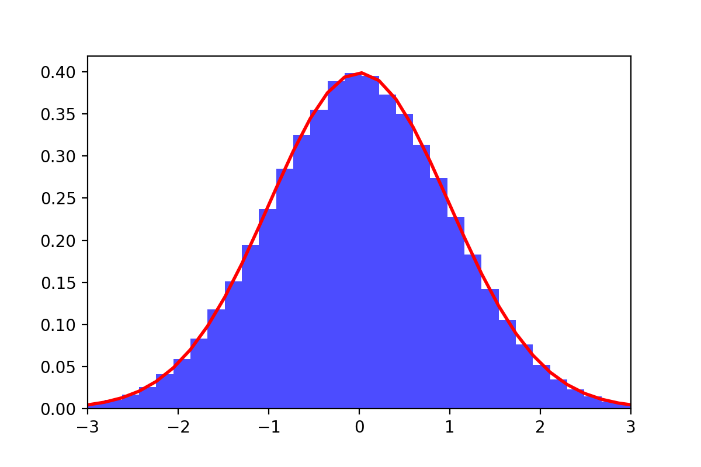

Consider a probability density \(\pi(x)\) on \(\mathbb{R}^d\) and a (deterministic) function \(F: \mathbb{R}^d \to \mathbb{R}^d\). We assume further that \(F\) is an involution in the sense that
\[ F(F(x)) = x \]
for all \(x \in \mathbb{R}^d\). To keep simple since it is not really the point of this short note, suppose that \(\pi(x)>0\) everywhere and that \(F\) is smooth. This type of transformations can be used to define Markov Chain Monte Carlo algorithms, eg. the standard Hamiltonian Monte Carlo (HMC) algorithm. In order to use this involution \(F\) to design a MCMC scheme, one needs to answer the following basic question: suppose that \(X \sim \pi(dx)\) and the proposal \(Y = F(X)\) is constructed and accepted with probability \(\alpha(X)\), how should the acceptance probability function \(\alpha: \mathbb{R}^d \to [0,1]\) be chosen so that the resulting random variable \(Z \; = \; Y \, B + (1-B) \, X\) is also distributed according to \(\pi(dx)\)? The Bernoulli random variable \(B\) is such that \(\mathop{\mathrm{P}}(B=1|X=x)=\alpha(x)\). In other words, for any test function \(\varphi: \mathbb{R}^d \to \mathbb{R}\), we would like \(\mathop{\mathrm{E}}[\varphi(Z)] = \mathop{\mathrm{E}}[\varphi(X)]\), which means that
\[ \int {\left\{ \varphi(F(x)) \, \alpha(x) + \varphi(x) \, (1-\alpha(x)) \right\}} \, \pi(dx) = \int \varphi(x) \, \pi(dx). \tag{1}\]
A change of variable to transform \(\varphi(F(x)) \to \varphi(x)\) and requiring that Equation 1 holds for any test function \(\varphi\) shows that this is equivalent to asking for the relation
\[ \alpha(x) \, \pi(x) \; = \; \alpha(y) \, \pi(y) \, |J_F(x)| \]
to hold for any \(x \in \mathbb{R}^d\) where \(y=F(x)\) and \(J_F(x)\) is the Jacobian of \(F\) at \(x\). To make things slightly more symmetrical, since \(|J_F(y)| \times |J_F(x)| = 1\) because of the involution property, this also reads
\[ \alpha(x) \, \frac{\pi(x) }{|J_F(x)|^{1/2}} \; = \; \alpha(y) \, \frac{\pi(y) }{|J_F(y)|^{1/2}}. \]
At this point, an obvious solution for anybody who has looked at the correctness-proof of the usual Metropolis-Hastings algorithm is to set
\[ \alpha(x) \; = \; \min {\left\{ 1, \frac{\pi(y) / |J_F(y)|^{1/2}}{\pi(x) / |J_F(x)|^{1/2}} \right\}} . \]
Since \(|J_F(y)| \times |J_F(x)| = 1\), that is the same asking
\[ \alpha(x) \; = \; \min {\left\{ 1, \frac{\pi(y)}{\pi(x)} \, |J_F(x)| \right\}} . \tag{2}\]
One could reach a similar conclusion by looking at the Radon-Nikodym ratio \([\pi(dx) \otimes q(x,dy)] / [\pi(dy) \otimes q(y,dx)]\) where \(q(x,dy)\) describes the deterministic transformation (Green 1995), but I do not find this significantly simpler in this situation. Indeed, Equation 2 is often used in the simpler case when \(F\) is volume preserving, i.e. \(|J_F(x)|=1\), as is the case for the Hamiltonian Monte Carlo (HMC). The discussion above was prompted by a student implementing a variant of this but with the wrong acceptance ratio \(\alpha(x) = \min {\left\{ 1, \frac{\pi(y)}{\pi(x)} \, \frac{|J_F(x)|}{|J_F(y)|} \right\}} \) and us taking quite a bit of time to find the bug… Note that there are situations when the function \(F\) is not exactly an involution in the sense that sometimes \(F(F(x))=x\), but sometimes not. This can happen for example when implementing MCMC on a manifold \(\mathcal{M} \subset \mathbb{R}^d\) and the function \(F\) involves a “projection” on the manifold \(\mathcal{M}\), as for example described in the really interesting article (Zappa, Holmes-Cerfon, and Goodman 2018). In that case, it suffices to add a “reversibility check”, i.e. make sure that when applying \(F\) starting from \(y=F(x)\), one gets back to \(x\). The acceptance probability in that case should be amended and expressed as
\[ \alpha(x) \; = \; \min {\left\{ 1, \frac{\pi(y)}{\pi(x)} \, |J_F(x)| \right\}} \, \mathbf{1} {\left( F(y)=x \right)} . \]
In other words, if applying \(F\) to the proposal \(y=F(x)\) does not lead back to \(x\), the proposal is rejected.
Same, but without involution
Sometimes, the requirement for \(F\) to be an involution is cumbersome. What if we just have a smooth bijection \(T: \mathbb{R}^d \to \mathbb{R}^d\) and its inverse \(T^{-1}\)? In that case, one can directly apply what has been described in the previous section: it suffices to add an index \(\varepsilon\in \{-1,1\}\) and consider the involution \(F\) on \(\mathcal{X}= \mathbb{R}^d \otimes \{-1,1\}\) defined as
\[ F: \left\{ \begin{align} (x,\varepsilon=+1) &\mapsto (T(x), \varepsilon=-1)\\ (x,\varepsilon=-1) &\mapsto (T^{-1}(x), \varepsilon=+1) \end{align} \right. \tag{3}\]
This allows one to define a Markov kernel that lets the distribution \(\overline{\pi}(x, \varepsilon) = \pi(dx)/2\) invariant. If one wants, one can even get rid of the index \(\varepsilon\in \{-1,1\}\). Indeed, instead of considering the Markov kernel just described, one can consider the Markov kernel that first randomizes the index \(\varepsilon\) and then applies the Markov kernel associated to Equation 3. This has the same effect as choosing to apply with equal probability \(T(x)\) pr \(T^{-1}(x)\), and this indeed still leaves \(\overline{\pi}\) invariant. Indeed, there are quite a few situations when randomizing \(\varepsilon\) is not a good idea since this can affect the mixing of the resulting Markov chain and there are indeed many papers exploiting this type of ideas.
A mixture of deterministic transformations?
A small riddle (whose answer I do not have), to conclude these notes. One can check that for any value of \(c \in \mathbb{R}\), the function \(F_{c}(x) = c + 1/(x-c)\) is an involution of the real line. This means that for any target density \(\pi(x)\) on the real line, one can build the associated Markov kernel \(M_c\) defined as
\[ M_c(x, dy) = \alpha_c(x) \, \delta_{F_c(x)}(dy) + (1-\alpha_c(x)) \, \delta_x(dy) \]
for acceptance probability described above, namely
\[ \alpha_c(x) = \min {\left\{ 1, \frac{\pi[F_c(x)]}{\pi(x)} |F'_c(x)| \right\}} . \]
For \(N \geq 2\), choose a few values \(x_1, \ldots, c_N \in \mathbb{R}\) and consider the mixture of Markov kernels
\[ M(x,dy) \; = \; \frac{1}{N} \sum_{i=1}^N M_{c_i}(x, dy). \]
The Markov kernel \(M(x, dy)\) lets the distribution \(\pi\) invariant, but it is not clear at all (to me) under what conditions the associated MCMC algorithm does converge to \(\pi\). One can empirically check that if \(N\) is very small, things can break down quite easily. On the other, for \(N\) not too small, things can start to work.

For \(N=5\) random values \(c_1, \ldots, c_5 \in \mathbb{R}\), the illustration aboves shows the empirical distribution of the associated Markov chain ran for \(T=10^6\) iterations and targeting the standard Gaussian distribution \(\pi(dx) \equiv \mathcal{N}(0,1)\): the fit seems almost perfect and I would not be surprised if \(M(x,dy)\) were ergodic with respect to \(\pi(dx)\) although I cannot prove it.